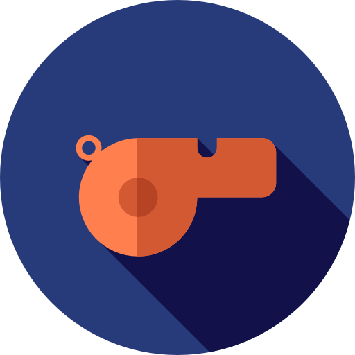
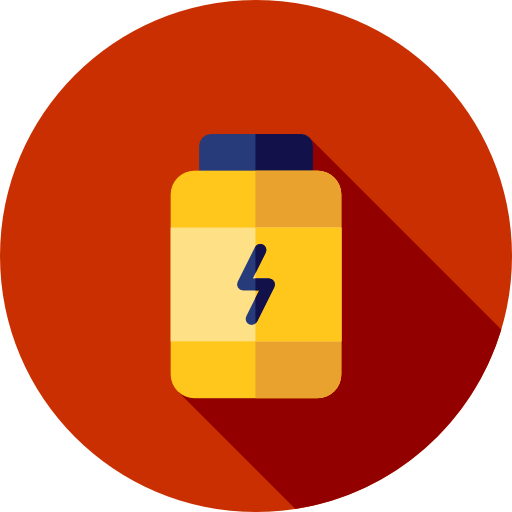

{{ totalPoints | thousandsSuffix : 2 }}
Total Points {{ totalRunningSteps | thousandsSuffix : 2 }}
Total Running Steps
{{ totalSteps | thousandsSuffix : 2 }}
Total Steps
{{ totalCalories | thousandsSuffix : 2 }}
Total Workout Calories {{ averageHR }} bpm
Average HR